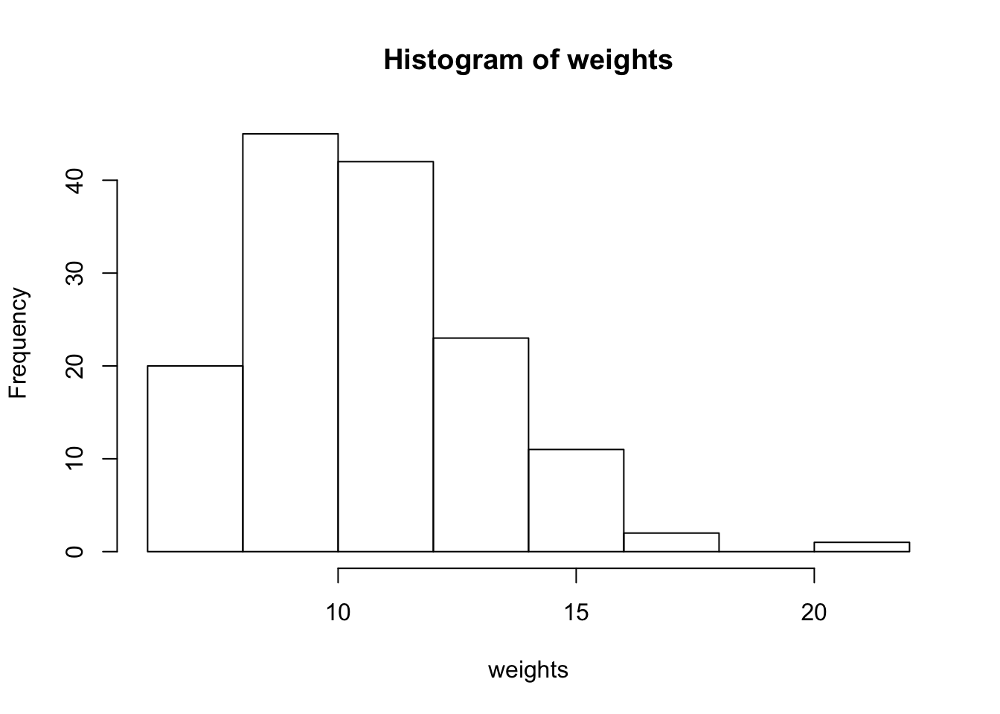
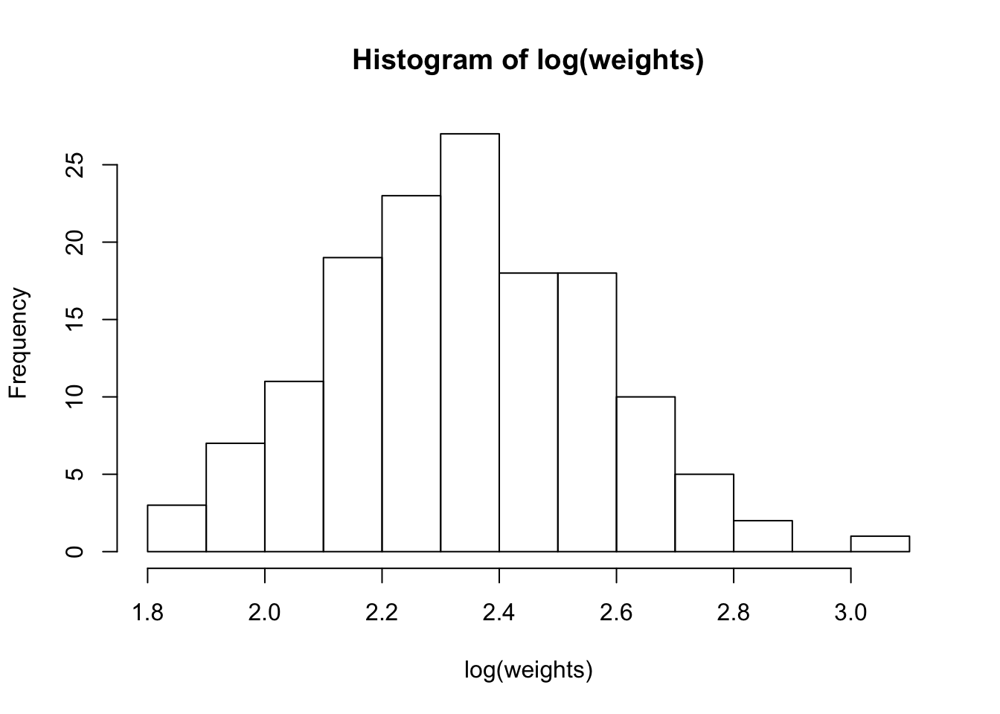
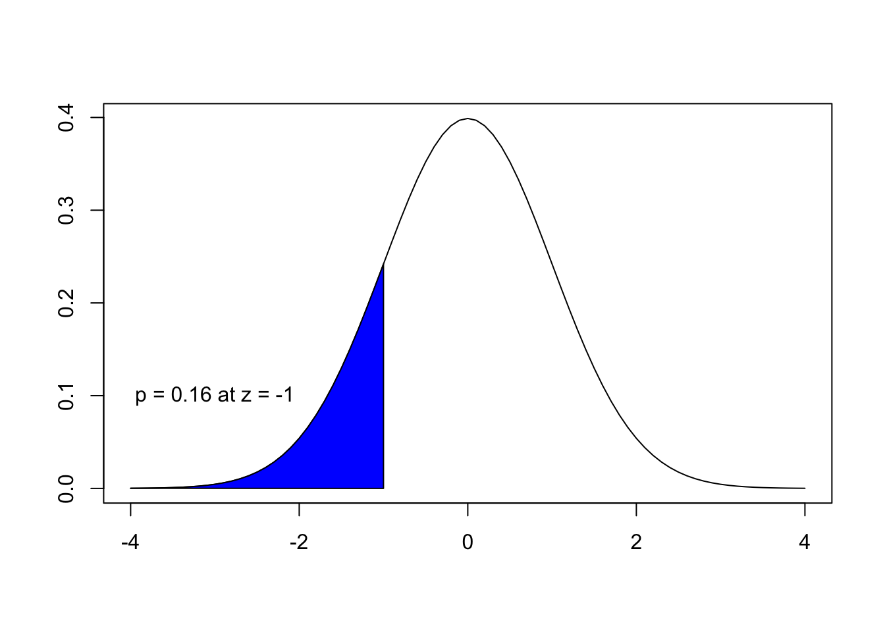
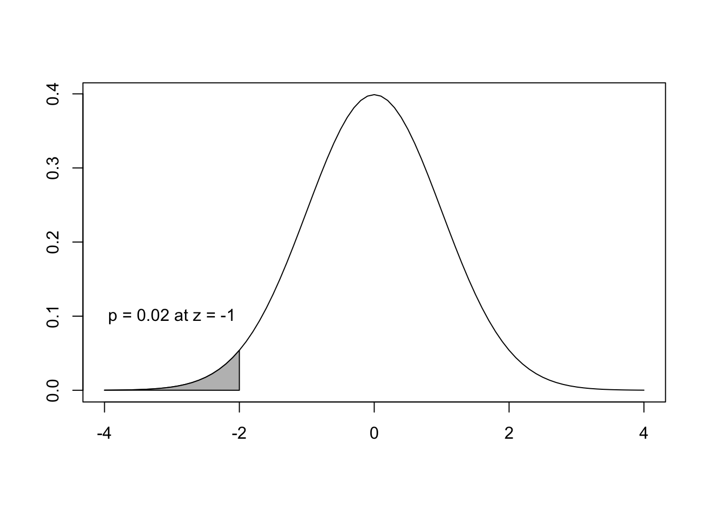
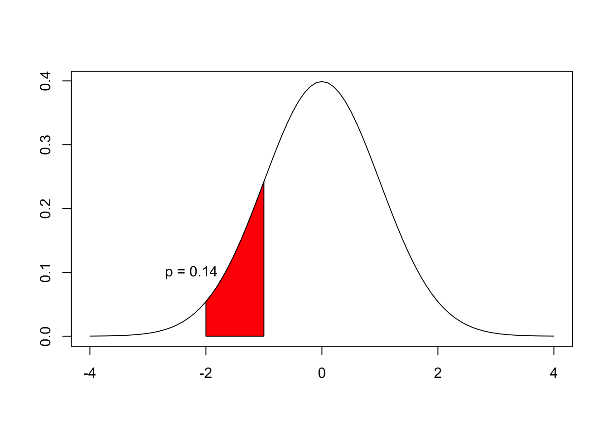

Chapter 1 Chi-square: Goodness of Fit and Test of Independence
1.1 Learning Objectives for Chapter
Jen’s: 1. Construct a contingency table and calculate its degrees of freedom. 2. State if a larger or smaller chi square value indicates stronger dependency between variables in a test of independence. 3. Describe the theory behind how we calculate the expected values in a test of independence.
- Define independence between random variables.
- Identify problems that can be addressed as goodness of fit or independence tests.
- Define degrees of freedom for the \(\chi^2\) distribution.
- Test for independence of categorical random variables.
- Test the goodness of fit of theoretical distributions to data.
- Look up quantiles and probabilities for the \(\chi^2\) distribution.
1.2 The chi-square \(\chi^2\) distribution
The chi-square \(\chi^2\) distribution is widely used in a variety of statistical tests. If describes the distribution of the sum of the squares of k independent standard normal random variables. Two of the most important applications of the \(\chi^2\) distribution are the test for goodness of fit of an observed distribution to a theoretical one and the test of independence between two categorical random variables.
In both tests, we calculate a \(\chi^2\) test statistic based the differences between observed and expected frequencies, given some theoretical model.
ADD: PLOT OF CHI SQUARE HERE
1.3 Goodness of Fit: Discrete distributions
In goodness of fit tests for discrete distributions, we are dealing with a single random variable with discrete classes. Supposed we take a sample from a population with k different classes for the random variable. We have an expected theoretical probability distribution across the k classes and want to test the “goodness of fit” of the population to the theoretical distribution using our sample.
Our data would consist of k observed frequencies (\(O_1:O_k\)), which we would compare to k expected frequencies (\(E_1:E_k\)). Then we can calculate \(\chi^2\) as
If there are only 2 classes involved (i.e., k = 2, df = 1), then we use an adjusted \(\chi^2\) formula:
\[\begin{equation} \chi^2_{adj} = \sum_{i = 1}^2 \frac{(\mid{O_i - E_i}\mid - 1/2)^2}{E_i} ,\; df = 1 \tag{1.2} \end{equation}\]The smaller the differences between the observed frequencies and what we expected based on our theoretical model, the smaller the \(\chi^2\) value. The larger ther \(\chi^2\) values, the less likely our results will support that the population follows our theoretical distribution. This deviates from previous tests, where our general desire was the reject the null hypothesis, because it meant that there was a significant effect of some variable of interest on another. Here, our null hypothesis is that the variable in our population of interest follows our theoretical distribution, and to reject the null hypothesis would suggest that it does not.
An example of a discrete theoretical distribution for a single variable is based on Mendel’s experiments with the common pea. He studied seven traits in total, but we will focus on two: seed shape and seed color. Mendel produced an F1 generation from crossing true-breeding parental pea plants producing wrinkled seeds (the recessive trait) with true-breeding parental plants that produced round seeds (the dominant trait). All of the F1 produced round seeds. He then produced an F2 generation through self-fertilization of the F1 hybrids, and this time he observed a 3:1 phenotypic ratio of smooth to wrinkled. This ratio of 3:1 for the dominant to recessive phentoypic traits was true in all of the traits he studied. We can use his dataset on pea seed shape to test the goodness of fit to a 3:1 ratio.
These were the observed frequencies for each seed shape phenotype:
## [1] 423 133We first sum the total number of pea observations to calculate the expected frequencies under a 3:1 ratio.
\(423 + 133 = 556\)
Then we can figure out the expected values given a 3:1 ratio:
Er <- (556/4)*3
Ew <- (556/4)*1
(Expected <- c(Er, Ew))## [1] 417 139Now, we can combine the expected frequenices with the observed frequencies in a table:
mTab <- data.frame(Observed, Expected)
rownames(mTab) <- c("round", "wrinkled")
mTab## Observed Expected
## round 423 417
## wrinkled 133 139We can calculate a \(\chi^2\) value for both seed shapes, but we will need to use the \(\chi^2_{adj}\) formula because we only have \(k - 2\) classes.
(chiAdj <- sum((abs(Observed - Expected) - 0.5)^2 / Expected))## [1] 0.2901679We now have a \(\chi^2_{adj}\) test statistic that we can compare to a critical \(\chi^2\) value with \(df = 1\) at \(\alpha = 0.05\). In R, we can use the qchisq() function to get a critical \(\chi^2\) value, and the pchisq() function to obtain a p value for our test statistic:
(criticalChi <- qchisq(p = 1 - 0.05, df = 1))## [1] 3.841459(pval <- pchisq(chiAdj, df = 1, lower.tail = F))## [1] 0.590113As you can see, our \(\chi^2_{adj}\) value of 0.29 is much smaller than the critical \(\chi^2\) value of 3.84, and our p value is 0.59. There is a 59% probability of seeing our results or more extreme results if the null hypothesis was true. We therefore conclude that our observed phenotypic ratio matches the expected ratio of 3:1.
We can use the same data to test the assumption that the combination of two traits will have a phenotypic ratio of 9:3:3:1 under Mendel’s law of independent assortment. We will look at the combination of seed shape and color, with round/yellow(RY), round/green (RG), wrinkled/yellow (WY), and wrinkled/green (WG) as the possible phenotypes. For seed color, yellow is the dominant trait. We would expect to see the phenotypes to follow a 9:3:3:1 ratio in the order RY:RG:WY:WG.
mendel## shape color both count
## 1 round yellow RY 315
## 2 round green RG 108
## 3 wrinkled yellow WY 101
## 4 wrinkled green WG 32(Observed2 <- mendel[,c(3:4)])## both count
## 1 RY 315
## 2 RG 108
## 3 WY 101
## 4 WG 32#Just as before, the total number of plants is 556.
ExpRY <- 9*(556/16)
ExpRG <- 3*(556/16)
ExpWY <- 3*(556/16)
ExpWG <- 1*(556/16)
(Expected2 <- c(ExpRY, ExpRG, ExpWY, ExpWG))## [1] 312.75 104.25 104.25 34.75mTab2 <- data.frame(Observed2, Expected2)
mTab2## both count Expected2
## 1 RY 315 312.75
## 2 RG 108 104.25
## 3 WY 101 104.25
## 4 WG 32 34.75We can use the regular \(\chi^2\) formula to obtain our test statistic because we have more than 2 classes:
(chi2 <- sum((Observed2$count - Expected2)^2 / Expected2))## [1] 0.470024And use R to find a critical \(\chi^2\) value and p value again:
k <- 4 # We have 4 classes
(criticalChi2 <- qchisq(p = 1 - 0.05, df = k-1))## [1] 7.814728(pval2 <- pchisq(chi2, df = k-1, lower.tail = F))## [1] 0.9254259We once again fail to reject the null hypothesis because our p value is much greater than 0.05.
We can also use the chisq.test() function in R to perform these tests very easily. We will demonstrate how to do this using the test for two traits. The function requires two arguments for a goodness of fit test: \ x = vector of observed frequencies \ p = vector of expected probabilities \
x <- Observed2$count
p <- c(9/16, 3/16, 3/16, 1/16)
chisq.test(x = x, p = p)##
## Chi-squared test for given probabilities
##
## data: x
## X-squared = 0.47002, df = 3, p-value = 0.9254You can see that all results from the chisq.test() function match our calculations exactly.
1.4 Goodness of Fit: Continuous distributions
We often wish to know if our data follows a particular continuous probability distribution. One common application of a \(\chi^2\) goodness of fit test for a continuous distribution is to test if continuous data follows a normal distribution.
To perform this test, we bin the continuous data into discrete classes of equal intervals so that we can calculate a \(\chi^2\) value for each discrete interval and sum them to obtain an overall \(\chi^2\)test statistic. We will use 144 adult cat heart weights from a free dataset that comes with the MASS package in R (cats) to test that the cat heart weights are normally distributed.
First, we order the observations from smallest to largest, then set up vectors that record the midpoints and endpoints of 9 discrete bins of the data range:
library(MASS)
cwt <- cats
#sorting the heart weights into a vector
weights <- sort(cwt$Hwt)Now, we can do a quick check to see if the data appears normally distributed before even doing our goodness of fit test:
hist(weights)
The data looks right-skewed, so we might consider log-transforming the weights to make them more normally distributed:
hist(log(weights))
That looks much better. We will use the log-transformed heart weights instead to test for normality.
First, we will set up a vector containing the endpoints of 9 discrete intervals of equal length within the range of observed log(weight) values:
classes <- 1:9 #number of intervals
#log transform
logwt <- log(weights)
#Get the total range of values:
range <- max(logwt) - min(logwt)
#Length of each bin interval when k = 9:
binInt <- range/9
#The endpoints of the bin intervals:
endpoints <- seq(min(logwt), max(logwt), binInt)The next part is a little trickier. We need to get a frequency of observed weights in each bin interval. We will show you how to do this using a for loop in R.
#set up a vector of NAs that will hold the observed frequencies
Ofreq <- rep(NA, 9)
#We use a logical query for each interval, where we ask which logwts are less than or equal to endpoint i, starting at i = 2 since the first endpoint is the minimum logwt., and greater than the previous endpoint.
#Then we sum each result to get the frequency of observations in each interval i.
for(i in 2:10){
Ofreq[i-1] <- sum(logwt > (endpoints[i-1]) &
logwt <= endpoints[i])
}
#we add 1 to Ofreq[1] since the minimum logwt value was not included in the first interval frequency using the code above.
Ofreq[1] <- Ofreq[1] + 1
Ofreq## [1] 5 16 25 37 25 22 11 2 1Now that we have all of our observed frequencies, we need to work on getting expected frequencies under the null hypothesis that our data are normally distributed. We first find the z score for each interval using the endpoint of the interval, the standard deviation of the weights, and the total mean of the weights:
meanWt <- mean(logwt)
sdWt <- sd(logwt)
(zscores <- (endpoints[-1] - meanWt) / sdWt)## [1] -1.6526552 -1.0627105 -0.4727659 0.1171788 0.7071235 1.2970681
## [7] 1.8870128 2.4769574 3.0669021We can now use the z scores to find the probability within each interval from a standard normal probability distribution. We can do this by finding the left-tailed cumulative probability at each endpoint and substracting the left-tailed cumulative probability at the previous endpoint. For example, if we have the probability at a z score of -1:
## [1] 0.1586553
And we know the left-tailed probability at z = -2:
## [1] 0.02275013
Then the probability between \(z = -2\) and \(z = -1\) is \(p(z \leq{-1}) - p(z \leq{-2})\):
## [1] 0.1359051
To calculate this in R, we can use the pnorm() function:
pnorm(-1) - pnorm(-2)## [1] 0.1359051We will do this for each interval endpoint in our logwt dataset using a for loop:
probs <- rep(NA, 9)
probs[1] <- pnorm(zscores[1])
for(i in 2:9){
probs[i] <- pnorm(zscores[i]) - pnorm(zscores[i-1])
}Now that we have the expected probabilities for each interval if our data were normally distributed, we can calculate expected frequencies by multiplying the expected probabilities by the total number of logwts in our dataset:
(Efreq <- probs * sum(Ofreq))## [1] 7.0848766 13.6448776 25.0896229 32.8969006 30.7604596 20.5115046
## [7] 9.7523384 3.3053643 0.7983269For each interval, we can calculate the squared deviation of the observed frequency from the expected frequency divided by the expected frequency, and then sum these values up to obtain our \(\chi^2\) statistic:
(chiSq <- (sum((Ofreq - Efreq)^2/Efreq)))## [1] 3.444954And as per usual, we can compare this \(\chi^2\) statistic to a critical \(\chi^2\) and obtain a p value.
The number of degrees of freedom is in general the total number of dimensions in which the results can vary. For the test of goodness of fit, the degrees of freedom are the total number of observed values used in the calculation of \(\chi^2\) minus the number of calculated values or parameters used to estimate the expected values. In this example, we have 9 observed frequencies, and in order to calculate the expected frequencies, we used the total number of observations (144), the estimated mean (2.34) and the estimated standard deviation (0.22). Therefore, \(df = 9 - 3\).
k <- 9
#Critical chi-squared value at alpha = 0.05
qchisq(p = 1 - 0.05, df = k-3)## [1] 12.59159#p value at our test statistic
pchisq(chiSq, k-3, lower.tail = F)## [1] 0.7512784We can see that our \(\chi^2\) test statistic is much smaller than the critical value and that p > 0.05, so we fail to reject the null hypothesis that the log of the cat heart weight data is normally distributed.
1.5 The \(\chi^2\) Test of Independence: Contingency Tables
The test of independence is related to the goodness of fit test. Just as in goodness of fit tests, we are concerned with observed frequencies versus expected frequencies under a theoretical model. The theoretical model in the case of the test of independence is specifically that two categorical variables are independent. The categorical variables each have a number of classes. When we classify our observations according to the two variables in a two way table with j rows and k columns, then we create a contingency table. For such a contingency table, \(df = (j-1)(k-1)\).
We show an example of a contingency table in Table 1.1.
| Species type | Dry | Wet | Wet or Dry | Total |
|---|---|---|---|---|
| common | 60 | 249 | 117 | 426 |
| rare | 25 | 199 | 44 | 268 |
| Total | 85 | 448 | 161 | 694 |
Does habitat (wet or dry) influence the prevalence of common or rare plant sepcies in South Australia and Victoria?
The null hypothesis of our test is that the habitat type and species type are independent of one another. We have observed frequencies in the table above, but how do we calculate expected frequencies? We have to understand that if the two variables are independent, then the joint probability in each cell of our contingency table will be the product of the corresponding row and colum marginal probabilities. In other words, the joint probability of a plant species being both common and found in a dry only habitat would equal the probability of it being found in a dry only habitat multiplied by the probability of it being common, if the habitat type and species type are indendent of one another.
We first build a table that contains the estimated joint probabilities for each cell under the null hypothesis of independence.
#create a table from the original data table, with appropriate dimensions just to hold joint probabilities:
plantP <- planttab[1:2,2:4]
#total sample size:
Grand <- as.numeric(planttab[3,5])
#Create vectors of the marginal probabilities
(HabP <- as.numeric(planttab[3,2:4])/Grand)## [1] 0.1224784 0.6455331 0.2319885(SpP <- as.numeric(planttab[1:2,5])/Grand)## [1] 0.6138329 0.3861671#multiply the row and column marginal probabilities to get the joint probabilities in each cell:
for(j in 1:2){
for(k in 1:3){
plantP[j,k] <- SpP[j] * HabP[k]
}
}
rownames(plantP) <- c("common", "rare")
knitr::kable(x = round(plantP,2),
col.names = c("Dry", "Wet", "Wet or Dry"),
caption = "Joint probabilities given the marginal probabilities in rows and columns"
)| Dry | Wet | Wet or Dry | |
|---|---|---|---|
| common | 0.08 | 0.40 | 0.14 |
| rare | 0.05 | 0.25 | 0.09 |
Now that we have theoretical probabilities, we can multiply them by the total sample size (n = 694) to obtain expected frequencies in each cell of our contingency table.
Exp <- plantP * Grand
knitr::kable(x = Exp,
col.names = c("Dry", "Wet", "Wet or Dry"),
caption = "Expected frequencies if the rareness of plant species was independent of habitat type"
)| Dry | Wet | Wet or Dry | |
|---|---|---|---|
| common | 52.17579 | 274.9971 | 98.82709 |
| rare | 32.82421 | 173.0029 | 62.17291 |
We know that we have \((2-1) \times (3-1) = 2\) degrees of freedom, so there is no need to use the \(\chi^2_{adj}\) formula. We can find the sum of each cell contribution to the test statistic using the normal \(\chi^2\) formula, equation (1.1):
#Matrices of the observed and expected frequencies:
Obs <- apply(planttab[1:2, 2:4], c(1,2), "as.numeric")
Exp## D W WD
## common 52.17579 274.9971 98.82709
## rare 32.82421 173.0029 62.17291(chiSq <- sum((Obs - Exp)^2/Exp))## [1] 18.0562Our critical \(\chi^2\) value and p value are:
(crit <- qchisq(1-0.05, df = 2))## [1] 5.991465(pval <- pchisq(chiSq, df = 2, lower.tail = F))## [1] 0.0001199901We can also use the chisq.test() function in R to perform the same test:
chisq.test(Obs)##
## Pearson's Chi-squared test
##
## data: Obs
## X-squared = 18.056, df = 2, p-value = 0.00012You can see we obtain identical results.
We see that our test statistic is much larger than our critical value (18.06 > 5.99), and that our p value (\(p = 0.00012\)) is much smaller than 0.05. We reject the null hypothesis and conclude that habitat type does have a relationship with the rareness of plant species in South Australia and Victoria.
If we take a closer look at the individual contributions to the \(\chi^2\) statistic:
(Obs - Exp)^2/Exp## D W WD
## common 1.173307 2.457663 3.341742
## rare 1.865033 3.906583 5.311874we see that the frequency of rare plants in wet and wet or dry habitats in particular have larger deviations of observed from expected frequencies.
Lets look again at our original observed frequencies and compare with our expected frequencies.
Observed:
| Species type | Dry | Wet | Wet or Dry |
|---|---|---|---|
| common | 60 | 249 | 117 |
| rare | 25 | 199 | 44 |
Expected:
| Species type | Dry | Wet | Wet or Dry |
|---|---|---|---|
| common | 52 | 275 | 99 |
| rare | 33 | 173 | 62 |
1.6 Exercises and Solutions
1.7 Homework Problems
1.8 Laboratory Exercises
---
title: "Lab14 Chi Square: Contingency Tables"
author: "YourFirstName YourLastName"
date: "enter date here"
output: html_document
---1.8.1 Plant Sciences
We can use the \(\chi^{2}\) distribution to test for a relationship between two categorical variables. This type of test is called a test of independence. We specifically test the null hypothesis that there is statistical independence between the two categorical variables. We will be working on a dataset published by @PierantozziPierluigi2012PaCI. They were interested in the effect of olive plant cultivar type on the number of seeds produced per olive fruit. Olive fruit can contain 1, 2, or no seeds. The common case is 1 seed, though rarely they will contain two seeds, and some may contain no seeds at all due to embryo death. In 2007, they collected 1,072 olives from different cultivar plants in Central Italy, noting the number of seeds each fruit contained.
To perform this test of independence, we will (1) create a contingency table, (2) calculate the frequencies we would expect to observe if cultivar type and number of seeds are independent, (3) calculate a \(\chi^{2}\) test statistic that contains information about the deviation of our observations from what is expected under \(H_{0}\) , and finally (4) compare the \(\chi^{2}\) test statistic against the critical \(\chi^{2}\) value to decide if we reject or fail to reject \(H_{0}\)
1.8.2 Part 1 Create contingency table
The first step in performing a test of independence is to build a contingency table with j rows and k columns. One variable is classed into j factor levels in the rows, and the second variable is classed into k factor levels in the columns. The frequencies of each combination of attributes between the two variables fill the table and are used to calculate the marginal totals for each attribute.
1A) Read in the olive data set as a csv file 1B) Create a contingency table using the table() function.
1C) Calculate the marginal totals of each attribute type of each of the two variables.
olives <- read.csv("./Datasets/olives.csv")
##use table() to calculate the frequencies of each cultivar/No.seeds combination in the data.
(olivect <- table(olives))## No.Seeds
## cultivar 0 1 2
## Ascolana Tenera 29 91 20
## Carolea 23 187 22
## Leccino 99 334 14
## Picholine 53 140 60#marginal totals:
(cultSums <- rowSums(olivect))## Ascolana Tenera Carolea Leccino Picholine
## 140 232 447 253(seedSums <- colSums(olivect))## 0 1 2
## 204 752 116ANSWER THE FOLLOWING QUESTIONS:
1D) State the null and alternative hypotheses.
1.8.3 Part 2: Expected Frequencies
We have a table of our observed frequencies, but how do we calculate what we would have expected if No.Seeds is independent of cultivar type? Under the \(H_{0}\), we would expect the joint probability of each cell in our contingency table to be based on the probability of two independent “events” (represented by the row and column categories) happening together. The probability of two independent events occuring simultaneously is simply the multiplication of the probabilities of each independent event. For example, if \(H_{0}\) is true, the probability that an olive fruit randomly sampled from this population of olive plants is both an Ascolana Tenera cultivar and contains 2 seeds is equal to the probability of being an Ascolana Tenera cultivar type multiplied by the probability of having 2 seeds. We estimate these probabilities using the marginal totals we calculated above divided by the total number of plants we sampled.
2A) Calculate the marginal probabilities of each variable attribute. 2B) Using the marginal probabilities from 2A, create a table of expected joint probabilities for each combination of cultivar type and number of seeds.
2C) Using the joint probabilities from 2B, calculate the expected frequencies of each combination of cultivar type and number of seeds.
#First, calculate the total number of olive fruits used in this study:
(total <- sum(cultSums)) #or## [1] 1072total <- nrow(olives)
#2A:
#Calculate the marginal probabilities of being a particular cultivar type:
(cultp <- cultSums/total)## Ascolana Tenera Carolea Leccino Picholine
## 0.1305970 0.2164179 0.4169776 0.2360075#Calculate the marginal probabilities of having a certain number of seeds:
(seedp <- seedSums/total)## 0 1 2
## 0.1902985 0.7014925 0.1082090#2B:
#Fill a table with the calculated joint probabilities for each combination of cultivar and number of seeds:
##Copy the dimensions of the cont. table to a new table. We will do this by simply copying the original contingency table, then replacing the original observed frequencies with joint probabilities:
jprobs <- as.matrix(olivect)
#Fill the "Ascolana Tenera" cultivar row with joint probabilities by multiplying the marginal "Ascolana Tenera" probability by all the marginal probabilities from seedp. Since the probabilities from seedp are in the same order as the jprobs columns, this will work fine:
jprobs["Ascolana Tenera", ] <- cultp["Ascolana Tenera"] * seedp
#Do the same for the other four cultivar types:
jprobs["Carolea", ] <- cultp["Carolea"] * seedp
jprobs["Leccino", ] <- cultp["Leccino"] * seedp
jprobs["Picholine", ] <- cultp["Picholine"] * seedp
#2C:
#Calculate the expected frequencies based on the joint probabilities under the null hypothesis multiplied by the total number of fruits sampled.
(oliveExp <- jprobs * total)## No.Seeds
## cultivar 0 1 2
## Ascolana Tenera 26.64179 98.20896 15.14925
## Carolea 44.14925 162.74627 25.10448
## Leccino 85.06343 313.56716 48.36940
## Picholine 48.14552 177.47761 27.37687ANSWER THE FOLLOWING QUESTIONS:
2D) Explain in your own words how we use probability theory to calculate expected frequencies if number of seeds was independent of cultivar type.
1.8.4 Part 3 Calculate \(\chi^{2}\)
The \(\chi^{2}\) values are calculated from the square of the differences between the observed and expected frequencies, weighted by the expected frequencies.
3A) Use the following formula to calculate the \(\chi^{2}\) test statistic for our contigency table:
\[\chi^{2} = \Large\Sigma \space\small\frac{(observed - expected)^2} {expected}\]
#Calculate chi square values for each cell:
(chisqtable <- (olivect - oliveExp)^2 / oliveExp)## No.Seeds
## cultivar 0 1 2
## Ascolana Tenera 0.2087378 0.5291680 1.5531946
## Carolea 10.1313362 3.6144822 0.3839069
## Leccino 2.2833302 1.3314557 24.4215514
## Picholine 0.4894734 7.9140765 38.8747531(chisq <- sum(chisqtable))## [1] 91.73547ANSWER THE FOLLOWING QUESTIONS:
3B) Looking at the chisqtable table object that holds individual \(\chi^{2}\) values, are there any cultivar/No.Seeds combinations that stand out as particularly different from what we would have expected under \(H_{0}\)? How did you determine this?
3C) What was the direction of difference between the observed and expected frequencies in the the cells you named for 3B? Based on this observation, if it is desirable to have more seeds per olive because this yields a larger fruit with a higher pulp/pit ratio [@PierantozziPierluigi2012PaCI], what cultivar(s) would you recommend to olive farmers to maximize profits?
1.8.5 Part4 Results
4A) Calculate the degrees of freedom 4B) Calculate the critical \(\chi^{2}\) value 4C) Obtain the p value 4D) Use a built in R function to do a test of independence
#Calculate the degrees of freedom
j <- nrow(olivect); k = ncol(olivect)
df <- (j-1)*(k-1)
#Calculate the critical value
(crit <- qchisq(0.95, df))## [1] 12.59159#Is our test statistic equal to or greater than our critical value?
chisq >= crit## [1] TRUE#You could also simply get the p value to use as your decision rule:
(pvalue <- pchisq(chisq, df, lower.tail = F))## [1] 1.320725e-17#We just performed a test of independence by hand, but R actually has a single function that will do it all at once for you:
chisq.test(olivect)##
## Pearson's Chi-squared test
##
## data: olivect
## X-squared = 91.735, df = 6, p-value < 2.2e-16ANSWER THE FOLLOWING QUESTIONS:
4E) Write a conclusion. Include the test statistic, p value, whether or not you reject the null hypothesis, and a statement or two about what you would recommend to olive producers based on these results.
1.8.6 Animal Sciences
We can use the \(\chi^{2}\) distribution to test for a relationship between two categorical variables. This type of test is called a test of independence. We specifically test the null hypothesis that there is statistical independence between the two categorical variables. A sample of 111 mice was divided into three groups, 57 that received a standard dose of pathogenic bacteria followed by antiserum, 58 that received the same dose of bacteria, followed by an experimental treatment, and a control group of 54 that received the bacteria, but no treatment. After sufficient time had elapsed for an incubation period and for the disease to run its course, 45 dead mice and 124 survivors were counted. Of those that died, 13 had received bacteria and antiserum, 7 had received the experimental treatment, while 25 had received bacteria only. A question of interest is if the antiserum had in any way protected the mice so that there were proportionally more survivors in that group.
To perform this test of independence, we will (1) create a contingency table, (2) calculate the frequencies we would expect to observe if cultivar type and number of seeds are independent, (3) calculate a \(\chi^{2}\) test statistic that contains information about the deviation of our observations from what is expected under \(H_{0}\) , and finally (4) compare the \(\chi^{2}\) test statistic against the critical \(\chi^{2}\) value to decide if we reject or fail to reject \(H_{0}\)
1.8.7 Part 1 Create contingency table
The first step in performing a test of independence is to build a contingency table with j rows and k columns. One variable is classed into j factor levels in the rows, and the second variable is classed into k factor levels in the columns. The frequencies of each combination of attributes between the two variables fill the table and are used to calculate the marginal totals for each attribute.
1A) Read in the mice data set as a csv file 1B) Create a contingency table using the table() function.
1C) Calculate the marginal totals of each attribute type of each of the two variables.
mice <- read.csv("./Datasets/mice.csv")
##use table() to calculate the frequencies of each treatment/result combination in the data.
(micect <- table(mice))## survive
## treatment alive dead
## antiserum 44 13
## control 29 25
## experimental 51 7#marginal totals:
(treatSums <- rowSums(micect))## antiserum control experimental
## 57 54 58(survSums <- colSums(micect))## alive dead
## 124 45ANSWER THE FOLLOWING QUESTIONS:
1D) State the null and alternative hypotheses.
1.8.8 Part 2: Expected Frequencies
We have a table of our observed frequencies, but how do we calculate what we would have expected if the survival of mice is independent of treatment? Under the \(H_{0}\), we would expect the joint probability of each cell in our contingency table to be based on the probability of two independent “events” (represented by the row and column categories) happening together. The probability of two independent events occuring simultaneously is simply the multiplication of the probabilities of each independent event. For example, if \(H_{0}\) is true, the probability that a mice randomly sampled from this population of olive plants would receive the control treatment and remain alive is equal to the probability of receiving the control treatment multiplied by the probability of remaining alive. We estimate these probabilities using the marginal totals we calculated above, divided by the total number of mice we sampled.
2A) Calculate the marginal probabilities of each variable attribute. 2B) Using the marginal probabilities from 2A, create a table of expected joint probabilities for each combination of treatment type and survival outcome.
2C) Using the joint probabilities from 2B, calculate the expected frequencies of each combination of treatment type and survival outcome.
#First, calculate the total number of mice used in this study:
(total <- sum(treatSums)) #or## [1] 169total <- nrow(mice)
#2A:
#Calculate the marginal probabilities of getting a particular treatment:
(treatp <- treatSums/total)## antiserum control experimental
## 0.3372781 0.3195266 0.3431953#Calculate the marginal probabilities of surviving or not:
(survp <- survSums/total)## alive dead
## 0.7337278 0.2662722#2B:
#Fill a table with the calculated joint probabilities for each combination of treatment type and survival outcome:
##Copy the dimensions of the cont. table to a new table. We will do this by simply copying the original contingency table, then replacing the original observed frequencies with joint probabilities:
jprobs <- as.matrix(micect)
#Fill the "antiserum" treatment row with joint probabilities by multiplying the marginal "antiserum" probability by all the marginal probabilities from survp. Since the probabilities from survp are in the same order as the jprobs columns, this will work fine:
jprobs["antiserum", ] <- treatp["antiserum"] * survp
#Do the same for the other treatment type:
jprobs["experimental", ] <- treatp["experimental"] * survp
jprobs["control", ] <- treatp["control"] * survp
#2C:
#Calculate the expected frequencies based on the joint probabilities under the null hypothesis multiplied by the total number of mice sampled.
(miceExp <- jprobs * total)## survive
## treatment alive dead
## antiserum 41.82249 15.17751
## control 39.62130 14.37870
## experimental 42.55621 15.44379ANSWER THE FOLLOWING QUESTIONS:
2D) Explain in your own words how we use probability theory to calculate expected frequencies if survival outcome was independent of treatment type.
1.8.9 Part 3 Calculate \(\chi^{2}\)
The \(\chi^{2}\) values are calculated from the square of the differences between the observed and expected frequencies, weighted by the expected frequencies.
3A) Use the following formula to calculate the \(\chi^{2}\) test statistic for our contigency table:
\[\chi^{2} = \Large\Sigma \space\small\frac{(observed - expected)^2} {expected}\]
#Calculate chi square values for each cell:
(chisqtable <- (micect - miceExp)^2 / miceExp)## survive
## treatment alive dead
## antiserum 0.1133737 0.3124076
## control 2.8472576 7.8457764
## experimental 1.6753732 4.6165839(chisq <- sum(chisqtable))## [1] 17.41077ANSWER THE FOLLOWING QUESTIONS:
3B) Looking at the chisqtable table object that holds individual \(\chi^{2}\) values, are there any treatment/survival outcome combinations that stand out as particularly different from what we would have expected under \(H_{0}\)? How did you determine this?
3C) What was the direction of difference between the observed and expected frequencies in the the cells you named for 3B? Based on this observation, what treatment type would you recommend to control the pathogenic bacteria?
1.8.10 Part4 Results
4A) Calculate the degrees of freedom 4B) Calculate the critical \(\chi^{2}\) value 4C) Obtain the p value 4D) Use a built in R function to do a test of independence
#Calculate the degrees of freedom
j <- nrow(micect); k = ncol(micect)
df <- (j-1)*(k-1)
#Calculate the critical value
(crit <- qchisq(0.95, df))## [1] 5.991465#Is our test statistic equal to or greater than our critical value?
chisq >= crit## [1] TRUE#You could also simply get the p value to use as your decision rule:
(pvalue <- pchisq(chisq, df, lower.tail = F))## [1] 0.000165691#We just performed a test of independence by hand, but R actually has a single function that will do it all at once for you:
chisq.test(micect)##
## Pearson's Chi-squared test
##
## data: micect
## X-squared = 17.411, df = 2, p-value = 0.0001657ANSWER THE FOLLOWING QUESTIONS:
4E) Write a conclusion. Include the test statistic, p value, whether or not you reject the null hypothesis, and a statement or two about what recommendations you would make based your results.